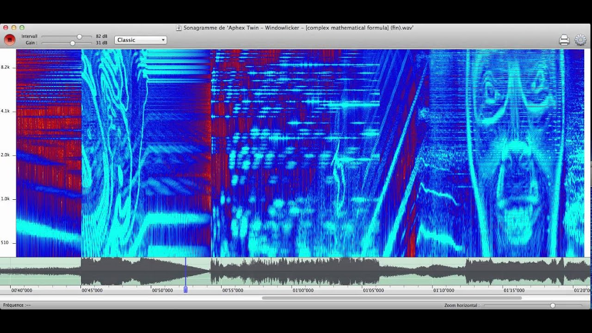
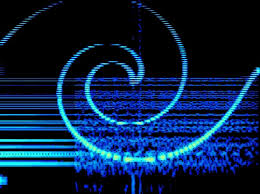

Richard D. James
// LA VIE DE L'ARTISTE
Richard David James mieux connu sous le nom d'Aphex Twin est un compositeur britannique de musique électronique, né à Limerick, en Irlande, le 18 août 1971. Il a passé son enfance en Cornouailles et vit désormais à Londres. Il est généralement considéré comme un des artistes majeurs de la scène techno, et comme ayant eu une influence notable sur les styles drum and bass, acid house, ambient et electronica. En 1991 il co-fonda le label Rephlex Records qu'il utilise pour publier ses projets sous d'autres pseudos (AFX, The Tuss, Power-Pill…) et faire découvrir de nouveaux artistes.
// DÉMARCHE ARTISTIQUE
Sa musique est une collision entre le chaos mathématique et la beauté pure. Il fabrique souvent ses propres machines et écrit ses propres algorithmes.
Du calme éthéré de l'Ambient à la violence du Drill'n'Bass, son oeuvre explore la relation entre l'humain et la machine. Le logo, créé par Paul Nicholson en 1991, est une forme amorphe, ni totalement organique, ni totalement synthétique, à l'image de son son.
// SIGNATURE CACHÉE
À 5 minutes 30 secondes, l'acousmographie de la piste révèle un visage dans le spectre. Aphex Twin a donc introduit une signature sonore de façon cachée. Cela permet de mieux comprendre sa démarche de création artistique.


.jpeg)